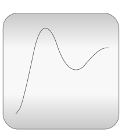
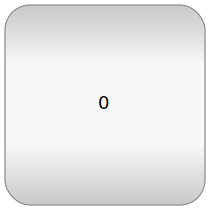
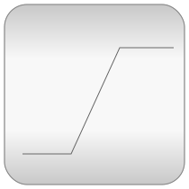
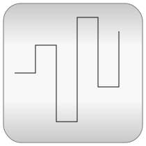

This library contains input/output blocks to build up block diagrams.
Copyright © 1998-2018, Modelica Association and DLR.
This Modelica package is free software and the use is completely at your own risk; it can be redistributed and/or modified under the terms of the 3-Clause BSD license. For license conditions (including the disclaimer of warranty) visit https://modelica.org/licenses/modelica-3-clause-bsd.
| Name | Description |
|---|---|
| Library of examples to demonstrate the usage of package Blocks | |
|  Continuous | Library of continuous control blocks with internal states |
| Library of discrete input/output blocks with fixed sample period | |
|  Interaction | Library of user interaction blocks to input and to show variables in a diagram animation |
| Library of connectors and partial models for input/output blocks | |
| Library of components with Boolean input and output signals | |
| Library of Real mathematical functions as input/output blocks | |
| Library of Integer mathematical functions as input/output blocks | |
| Library of Boolean mathematical functions as input/output blocks | |
|  Nonlinear | Library of discontinuous or non-differentiable algebraic control blocks |
| Library of blocks to combine and extract signals | |
|  Noise | Library of noise blocks |
| Library of signal source blocks generating Real, Integer and Boolean signals | |
| Library of blocks to interpolate in one and two-dimensional tables | |
| Library of constants, external objects and types with choices, especially to build menus | |
| Icons for Blocks |
replaceable type SignalType = Realin order that the type of the signal of an input/output block can be changed to a physical type, for example:
Sine sin1(outPort(redeclare type SignalType=Modelica.SIunits.Torque))